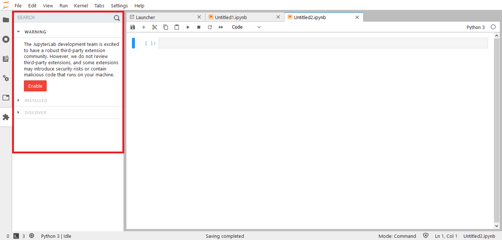
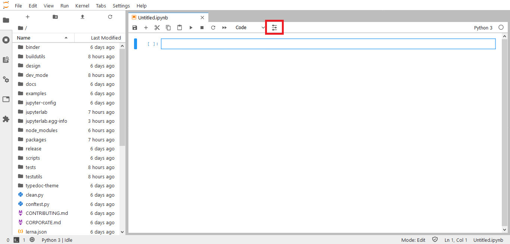
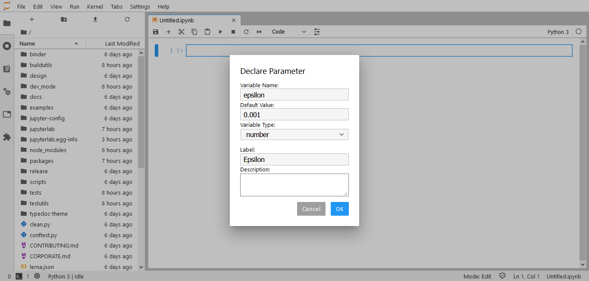

Project Jupyter trabalha para construir padrões, serviços e interfaces para diversas linguagens de programação. Uma de suas aplicações mais importantes é a interface web JupyterLab. Tão importante que é usado em plataformas como o AWS SageMaker Studio e o Google Colaboratory.
O Que Você Vai Aprender
- Noções básicas sobre o Jupyter Notebook
- Como criar um ambiente de desenvolvimento para o JupyterLab
- Como criar extensões usando npm e TypeScript
- Como instalar e usar as extensões criadas
Os principais conceitos que envolvem o JupyterLab são descritos a seguir:
Kernels
Kernel é o programa que roda o código do notebook. O Kernel Python é o principal, porém kernels de outras linguagens podem ser instalados.
Cada notebook tem sua própria memória e seu próprio kernel.
Use o menu Kernel para reiniciar ou trocar a linguagem de programação do kernel para o notebook visualizado.
JupyterLab Workspaces
Workspaces mantém o estado do JupyterLab: abas abertas e layout. Quando a página é recarregada o estado do workspace é recuperado.
O workspace padrão é acessado diretamente na URL /lab:http(s)://<server:port>/<lab-location>/lab
Outros workspaces têm o nome na URL:http(s)://<server:port>/<lab-location>/lab/workspaces/foo
Workspaces salvam o estado no backend e podem ser compartilhados por usuários (ou browsers).
JupyterLab Extensions
Extensões podem alterar ou adicionar qualquer parte do JupyterLab. Por exemplo, é possível:
- Criar novos temas e estilos (eg. horizon-theme)
- Adicionar visualizadores/editores de arquivo
- Criar renderizadores em células de notebooks (eg. tensorboard)
- Adicionar itens em menus e barra de ferramentas
- Adicionar atalhos de teclados
Extensões são npm packages (projetos Javascript).
Será necessário NodeJS e Python>=3.6.
Instale também o Python package cookiecutter para criar seus projetos mais rapidamente.
O uso de virtualenv ou virtualenvwrapper é aconselhado.
Execute os seguintes comandos:
# Fazer download do projeto
git clone https://github.com/jupyterlab/jupyterlab/
# Instalar dependências
pip install -e .
jlpm install
# Construir artefatos
jupyter lab build
# Iniciar JupyterLab em http://localhost:8888/lab
jupyter lab --NotebookApp.token='' --NotebookApp.password=''
Abra o browser em http://localhost:8888/lab
Pronto! Você já tem tudo o que é necessário para criar suas extensões.
O exemplo a seguir mostra como construir uma extensão simples. Quando a query string?open=notebook existir (eg. http://localhost:8888/lab/tree/path/to/folder/?open=notebook todos os notebooks na pasta serão abertos.
Estrutura do projeto
Na pasta jupyterlab/packages/, crie o projeto usando cookiecutter https://github.com/jupyterlab/extension-cookiecutter-ts
author_name []: Your Name
extension_name [myextension]: url-functions-extension
project_short_description [A JupyterLab extension.]: A JupyterLab extension that creates some URL functions
has_server_extension [n]: n
repository [https://github.com/my_name/myextension]: https://github.com/my_name/url-functions-extension
A seguinte estrutura será gerada:
jupyterlab
├─ ...
└ packages
├─ ...
├── url-functions-extension
│ ├── LICENSE
│ ├── README.md
│ ├── package.json <- npm package definition
│ ├── src
│ │ └── index.ts <- TypeScript source
│ ├── style
│ │ └── index.css <- Stylesheet source
│ └── tsconfig.json <- TypeScript package definition
└ ...
Na pasta jupyterlab/packages/url-functions-extension/, adicione as dependências do projeto:
cd ./packages/url-functions-extension/
jlpm add @jupyterlab/application
jlpm add @jupyterlab/apputils
jlpm add @jupyterlab/services
Crie/Edite os seguintes arquivos (os trechos sem alteração serão omitidos):
src/index.ts
import {
IRouter,
JupyterFrontEnd,
JupyterFrontEndPlugin
} from '@jupyterlab/application';
import { ICommandPalette } from '@jupyterlab/apputils';
import { Contents } from '@jupyterlab/services';
/**
* The command IDs used by the url-functions plugin.
*/
namespace CommandIDs {
export const open = 'url-functions:open';
}
/**
* Initialization data for the url-functions extension.
*/
const extension: JupyterFrontEndPlugin<void> = {
id: 'url-functions-extension',
autoStart: true,
requires: [JupyterFrontEnd.IPaths, ICommandPalette, IRouter],
activate: (
app: JupyterFrontEnd,
paths: JupyterFrontEnd.IPaths,
palette: ICommandPalette,
router: IRouter
) => {
console.log('JupyterLab extension url-functions-extension is activated!');
app.commands.addCommand(CommandIDs.open, {
label: 'Open all notebooks...',
execute: async () => {
const args = router.current;
// gets url path, then removes prefixes: `/lab/workspaces/foo`, `/lab`, `/tree`
const dirpath = args.path
.replace(new RegExp(`^${paths.urls.workspaces}\/([^?\/]+)`), '')
.replace(new RegExp(`^${paths.urls.app}`), '')
.replace(new RegExp('^/tree'), '');
// fetch the contents of dirpath
const item = await app.serviceManager.contents.get(dirpath);
if (item.type === 'directory') {
// filter by notebooks
const notebooks = item.content.filter(
(i: Contents.IModel) => i.type === 'notebook'
);
// open notebooks
notebooks.forEach(({ path }: Contents.IModel) => {
void app.commands.execute('docmanager:open', { path });
});
const url = args.path + args.hash;
router.navigate(url);
}
}
});
palette.addItem({
command: CommandIDs.open,
category: 'File Operations',
args: {}
});
router.register({
command: CommandIDs.open,
pattern: /(\?open=notebook|\&open=notebook)($|&)/,
rank: 10 // High priority: 10:100.
});
}
};
export default extension;
Construir extensão
Na pasta jupyterlab/packages/url-functions-extension/ execute os seguintes comandos:
# Install dependencies
jlpm
# Build Typescript source
jlpm build
# Link your development version of the extension with JupyterLab
jupyter labextension link .
# Rebuild Typescript source after making changes
jlpm build
# Rebuild JupyterLab after making any changes
jupyter lab build
Na pasta jupyterlab/ execute os seguintes comandos:
# Watch the source directory in another terminal tab
jlpm watch
# Run jupyterlab in watch mode in one terminal tab
jupyter lab --watch --NotebookApp.token='' --NotebookApp.password=''
Testar extensão no JupyterLab
Abra o browser em http://localhost:8888/lab
- Clique na aba "Extension Manager" no painel à esquerda. Habilite as extensões se necessário.
 - Crie alguns notebooks.

- Feche todas as abas.

- Acesse a URL com
http://localhost:8888/lab?open=notebooke veja se os arquivos são abertos.
Parabéns! Você criou a sua primeira extensão!
O exemplo a seguir mostra como construir uma extensão que adiciona elementos à interface web do JupyterLab. Um botão será adicionado à barra de ferramentas, e ao clicá-lo um modal exibirá os campos para declarar um parâmetro no código.
Parâmetros são variáveis seguidas por um comentário no formato do Google Colaboratory Forms.
Exemplos:
text = 'value' #@param {type:"string"}dropdown = '1st option' #@param ["1st option", "2nd option", "3rd option"]
Estrutura do projeto
Na pasta jupyterlab/packages/, crie o projeto usando cookiecutter https://github.com/jupyterlab/extension-cookiecutter-ts
author_name []: Your Name
extension_name [myextension]: parameters-extension
project_short_description [A JupyterLab extension.]: A JupyterLab extension that allows to parameterize code
has_server_extension [n]: n
repository [https://github.com/my_name/myextension]: https://github.com/my_name/parameters-extension
A seguinte estrutura será gerada:
jupyterlab
├─ ...
└ packages
│ ├── LICENSE
│ ├── README.md
│ ├── package.json <- npm package definition
│ ├── src
│ │ └── index.ts <- TypeScript source
│ ├── style
│ │ └── index.css <- Stylesheet source
│ └── tsconfig.json <- TypeScript package definition
└ ...
Na pasta jupyterlab/packages/parameters-extension/, adicione as dependências do projeto:
cd ./packages/parameters-extension/
jlpm add @jupyterlab/application
jlpm add @jupyterlab/apputils
jlpm add @jupyterlab/docregistry
jlpm add @jupyterlab/notebook
jlpm add @jupyterlab/ui-components
jlpm add @lumino/disposable
jlpm add @lumino/widgets
Crie/Edite os seguintes arquivos (os trechos sem alteração serão omitidos):
src/svg.d.ts
declare module '*.svg' {
const value: string;
export default value;
}
style/icons/sliders.svg
<svg xmlns="http://www.w3.org/2000/svg" width="20pt" height="32" viewBox="0 0 20 24">
<g class="jp-icon3" fill="#231f20">
<path d="M19 10.816h-.86c-.456-1.312-1.69-2.254-3.14-2.254-1.45 0-2.684.942-3.14 2.254H1c-.55 0-1 .454-1 1.016 0 .559.45 1.012 1 1.012h10.79c.39 1.43 1.679 2.48 3.21 2.48s2.82-1.05 3.21-2.48H19c.55 0 1-.453 1-1.012 0-.562-.45-1.016-1-1.016zm0 0M19 19.605H8.14c-.456-1.312-1.69-2.253-3.14-2.253-1.45 0-2.684.941-3.14 2.253H1c-.55 0-1 .454-1 1.016 0 .559.45 1.012 1 1.012h.79c.39 1.43 1.679 2.48 3.21 2.48s2.82-1.05 3.21-2.48H19c.55 0 1-.453 1-1.012 0-.562-.45-1.016-1-1.016zm0 0M1 4.395h.79c.39 1.43 1.679 2.48 3.21 2.48s2.82-1.05 3.21-2.48H19c.55 0 1-.454 1-1.016 0-.559-.45-1.012-1-1.012H8.14C7.685 1.055 6.45.113 5 .113c-1.45 0-2.684.942-3.14 2.254H1c-.55 0-1 .453-1 1.012 0 .562.45 1.016 1 1.016zm0 0"/>
</g>
</svg>
tsconfig.json
{
...
"files": ["src/svg.d.ts"],
...
}
src/index.ts
import { IDisposable, DisposableDelegate } from '@lumino/disposable';
import { Widget } from '@lumino/widgets';
import {
JupyterFrontEnd,
JupyterFrontEndPlugin
} from '@jupyterlab/application';
import { showDialog, Dialog, ToolbarButton } from '@jupyterlab/apputils';
import { DocumentRegistry } from '@jupyterlab/docregistry';
import { NotebookPanel, INotebookModel } from '@jupyterlab/notebook';
import { LabIcon } from '@jupyterlab/ui-components';
import slidersSvgstr from '../style/icons/sliders.svg';
/**
* Initialization data for the parameters-extension extension.
*/
const extension: JupyterFrontEndPlugin<void> = {
id: 'parameters-extension',
autoStart: true,
activate
};
export default extension;
/**
* Activate the extension.
*/
function activate(app: JupyterFrontEnd) {
console.log('JupyterLab extension parameters-extension is activated!');
// Add Button to Toolbar
app.docRegistry.addWidgetExtension('Notebook', new ButtonExtension());
}
/**
* A notebook widget extension that adds a button to the toolbar.
*/
export class ButtonExtension
implements DocumentRegistry.IWidgetExtension<NotebookPanel, INotebookModel> {
createNew(
panel: NotebookPanel,
context: DocumentRegistry.IContext<INotebookModel>
): IDisposable {
const button = new ToolbarButton({
icon: slidersIcon,
onClick: () => {
void showDialog({
title: 'Declare Parameter',
body: new Widget({ node: createForm() }),
buttons: [Dialog.cancelButton(), Dialog.okButton()]
});
},
tooltip: 'Declare Parameter'
});
panel.toolbar.insertAfter('cellType', 'declareParameter', button);
return new DisposableDelegate(() => {
button.dispose();
});
}
}
function createForm() {
const body = document.createElement('div');
// Name Input
const nameTitle = document.createElement('label');
nameTitle.textContent = 'Variable Name:';
const name = document.createElement('input');
body.appendChild(nameTitle);
body.appendChild(name);
// Default Value Input
const defaultValueTitle = document.createElement('label');
defaultValueTitle.textContent = 'Default Value:';
const defaultValue = document.createElement('input');
body.appendChild(defaultValueTitle);
body.appendChild(defaultValue);
// Type Select
const typeTitle = document.createElement('label');
typeTitle.textContent = 'Variable Type:';
const type = document.createElement('select');
const options = ['string', 'integer', 'number'];
options.forEach(item => {
const option = document.createElement('option');
option.value = item;
option.textContent = item;
type.appendChild(option);
});
body.appendChild(typeTitle);
body.appendChild(type);
// Label Input
const labelTitle = document.createElement('label');
labelTitle.textContent = 'Label:';
const label = document.createElement('input');
body.appendChild(labelTitle);
body.appendChild(label);
// Description Input
const descriptionTitle = document.createElement('label');
descriptionTitle.textContent = 'Description:';
const description = document.createElement('textarea');
body.appendChild(descriptionTitle);
body.appendChild(description);
return body;
}
export const slidersIcon = new LabIcon({
name: 'parameters:sliders',
svgstr: slidersSvgstr
});
Construir extensão
Na pasta jupyterlab/packages/parameters-extension/, execute os seguintes comandos:
# Install dependencies
jlpm
# Build Typescript source
jlpm build
# Link your development version of the extension with JupyterLab
jupyter labextension link .
# Rebuild Typescript source after making changes
jlpm build
# Rebuild JupyterLab after making any changes
jupyter lab build
Na pasta jupyterlab/ execute os seguintes comandos:
# Watch the source directory in another terminal tab
jlpm watch
# Run jupyterlab in watch mode in one terminal tab
jupyter lab --watch --NotebookApp.token='' --NotebookApp.password=''
Testar extensão no JupyterLab
Abra o browser em http://localhost:8888/lab
- Clique no ícone "Parameters" na barra de ferramentas
 - Preencha os campos solicitados
 - Veja se o código contém o parâmetro declarado no passo anterior.
Parabéns! Agora você sabe como criar elementos visuais usando extensões!
E agora?
Acesse o fork do JupyterLab no repo do PlatIAgro:
Desenvolva alguma destas funcionalidades:
- Declarar parâmetros das tarefas/componentes no JupyterLab
- Criar células com trechos de código úteis do PlatIAgro SDK no JupyterLab
- Upload de .CSV e .TXT, criação de datasets, e edição do parâmetro dataset no JupyterLab